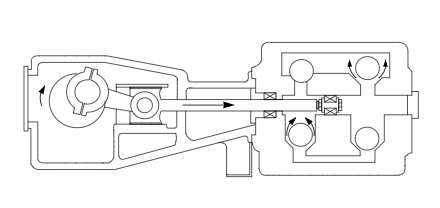

In positive displacement pumps, the liquid is forced to move because it is displaced by the movement of a piston, vane, screw, or roller. The pumps force liquid into the system regardless of the resistance that may oppose the transfer. It is particularly important therefore, to consider to the wider pumping system and safety requirements, particularly the potential need for relief valves to avoid over pressurisation of the system when using positive displacement pumps.
Positive displacement pumps generally carry a higher overall efficiency than centrifugal pumps because internal losses are minimised.
Reciprocating pumps utilise the principle of a moving piston, plunger, or diaphragm to draw liquid into a cavity through an inlet valve and push it out through a discharge valve.
These pumps have overall efficiency ranges from 50% for the small capacity pumps to 90% for the larger capacity sizes.
They can handle a wide range of liquids, including those with extremely high viscosities, high temperatures, and high slurry concentrations due to the pump’s basic operating principle, i.e., the pump adds energy to the liquid by direct application of force, rather than by acceleration.
Selecting an appropriate pump type is the first step, after which, the pump must be appropriately sized for the particular application. This requires significant understanding of the wider pumping system, particularly to establish the required pump duty.
Notable inputs:
Several industry tools exist to aid in pump sizing using the above inputs. One such useful tool by Xylect is linked here. Additionally, the following spreadsheet may be particularly helpful in establishing the aforementioned inputs. (This file can also be found in the supporting documents folder.)